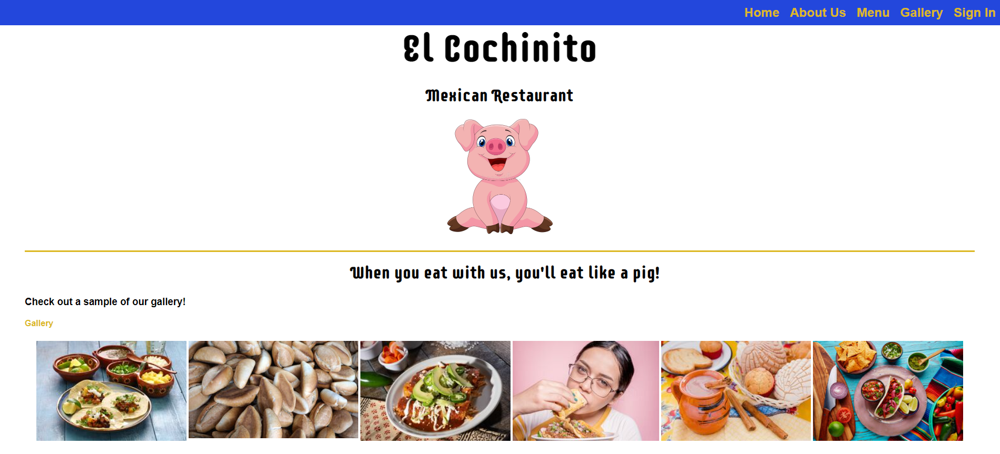
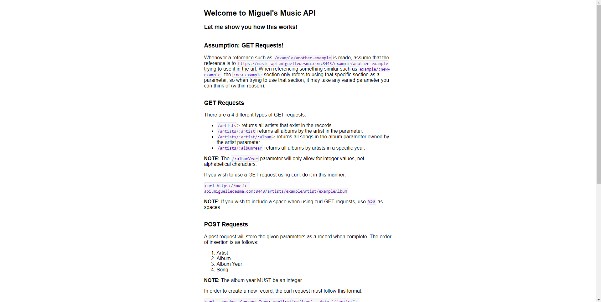
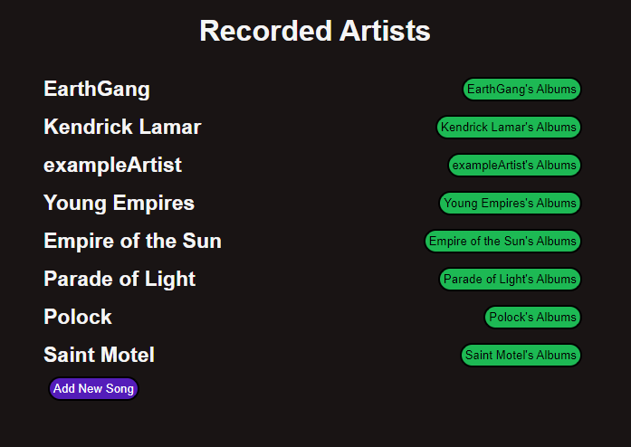
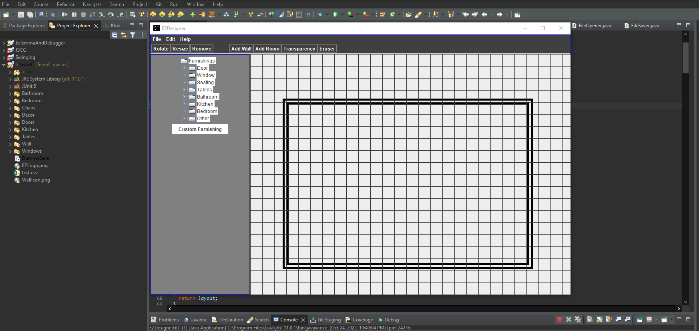

Welcome to the projects page! Here are some projects I have previously worked on.
El Cochinito
Produced a static website created to promote restaurant features such as a visually appealing menu with descriptions of each main or side dish, followed by information related to the source of the restaurant’s ingredients. Website visitors also see images of the physical restaurant to showcase restaurant atmosphere. Users may navigate through the website via labeled buttons, or the dropdown menu buttons, if the screen is smaller than six-hundred pixels wide.
Web Service
Created an Express-based web service built to store information on a MySQL database hosed on a DigitalOcean droplet via curl requests on a command line. The web service supports the full spectrum of CRUD operations via SQL queries embedded in the scripts and displays results to confirm each operation is executed.
React Application
Developed a React application designed to allow website visitors to see information about music artist’s albums and songs stored on a MySQL database. The React application supports the full spectrum of CRUD, allowing users to easily add, update, and delete artists, albums, and songs, as well as descriptions and details of each
Github Link to Floor Plan Application
Collaborated with three teammates to build a Java application to serve both architects and interior designers. The application allows them to design a full structure with walls, windows, doors, fixed and unfixed furnishings. Additionally, our application allowed the user to adjust the size, save the design, and print their concept on paper.